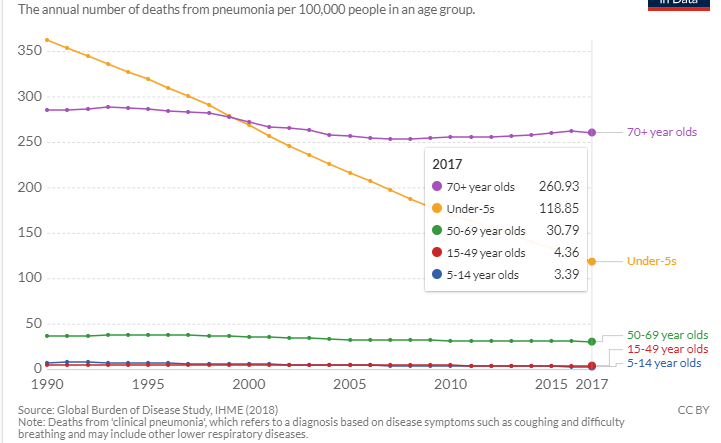

Infectious diseases are disorders caused by organisms — such as bacteria, viruses, fungi or parasites.
Many organisms live in and on our bodies. They're normally harmless or even helpful. But under certain conditions, some organisms may cause disease.
They can be passed from person to person through body secretions, insects or other means.
MALARIA
It is a single-celled parasite that multiplies amongst the red blood cells of humans as well as in the mosquito’s intestine.
The parasites multiply in the mosquito’s gut and these infectious forms are passed onto another human when the mosquito feeds again.
CAUSE AND EFFECT:
Malaria is caused by a type of microscopic parasite. The parasite is transmitted to humans most commonly through mosquito bites.
A malaria infection is generally characterized by the following signs and symptoms: Fever, chills, headache, nausea and vomiting, and muscle pain and fatigue.
CURE/TREATMENT:
Physicians administer the medication in pill form or as an intravenous antimalarial. The most commonly used medications are:
- chloroquine (Aralen), doxycycline (Vibramycin, Oracea, Adoxa, Atridox), quinine (Qualaquin), mefloquine, etc.
- RTS,S/AS01 (RTS,S) vaccine that acts against Plasmodium falciparum, the deadliest malaria parasite globally
2 billion mosquito nets delivered worldwide since 2004
- Insecticide-treated mosquito nets
- Indoor spraying with residual insecticides
- Antimalarial drugs
- Surveillance
- Eradicating
STATISTICS:
- In 2018, there were an estimated 228 million cases of malaria worldwide.
- The estimated number of malaria deaths stood at 405 000 in 2018.
- Children aged under 5 years are the most vulnerable group affected by malaria; in 2018, they accounted for 67% (272 000) of all malaria deaths worldwide.
- The WHO African Region carries a disproportionately high share of the global malaria burden. In 2018, the region was home to 93% of malaria cases and 94% of malaria deaths.
PREVENTION MODULE
- Malaria Vaccine Implementation Programme (MVIP) a large-scale pilot programme coordinated by WHO which aims to vaccinate 360,000 children per year with RTS,S/AS01 (RTS,S) in the regions of Africa.
PNEUMONIA
The inflammation in the air sacs called alveoli in th lungs fill with fluid or pus, making it difficult to breathe.
CAUSE AND EFFECT:
Viruses, bacteria, and fungi can all cause pneumonia. Common causes of viral pneumonia are influenza and respiratory syncytial virus (RSV).
A common cause of bacterial pneumonia is Streptococcus pneumoniae (pneumococcus).
CURE/TREATMENT:
Antibiotics, cough medicine and fever reducers/pain relievers can be used for the treatment of pneumonia.
STATISTICS:
- Pneumonia accounts for 15% of all deaths of children under 5 years old, killing 808,694 children in 2017.
- 2.56 million people died from pneumonia in 2017. Almost a third of all victims were children younger than 5 years.
- Pneumonia kills more children than any other infectious disease
- Claiming the lives of over 800,000 children under 5 every year or around 2,200 every day
- Comparatively in 2018, 437,000 children under five died due to diarrhoea and 272,000 to malaria
Globally, there are over 1,400 cases of pneumonia per 100,000 children, or 1 case per 71 children every year- Greatest incidence occurring in South Asia (2,500 cases per 100,000 children) and West and Central Africa (1,620 cases per 100,000 children)

PREVENTION MODULE
United Nations Children’s Fund (UNICEF) recently developed a framework of interventions known as the Global Action Plan for the Prevention and Control of Pneumonia (GAPP)
which aims to prevent children from getting pneumonia and to provide those who get pneumonia with appropriate case management.
Two vaccines against bacterial pathogens – Streptococcus pneumoniae (pneumococcus) and Haemophilus influenzae type b (Hib) – are currently available in many countries worldwide
CHICKENPOX
Chickenpox, also known as varicella, is a highly contagious disease caused by the initial infection with varicella zoster virus (VZV). The disease results in a characteristic skin rash that forms small, itchy blisters, which eventually scab over. It usually starts on the chest, back, and face.
CAUSE AND EFFECT:
Varicella-zoster virus (VZV) causes the chickenpox infection. Most cases occur through contact with an infected person.
The itchy blister rash caused by chickenpox infection appears 10 to 21 days after exposure to the virus. Other signs and symptoms include: Fever, Loss of appetite, Headache, Tiredness and a general feeling of being unwell (malaise).
CURE/TREATMENT:
There is no specific treatment for chickenpox, but there are pharmacy remedies that can alleviate symptoms. These include paracetamol to relieve fever, and calamine lotion and cooling gels to ease itching.
STATISTICS:
- Chickenpox used to be very common in the United States. In the early 1990s, an average of 4 million people got varicella, 10,500 to 13,000 were hospitalized (range, 8,000 to 18,000), and 100 to 150 died each year.
- In the 1990s, the highest rate of varicella was reported in preschool-aged children.
- Varicella hospitalizations declined 93% in 2012 versus the pre-vaccine period; during the 2-dose varicella vaccination period (2006-2012), hospitalizations declined38%